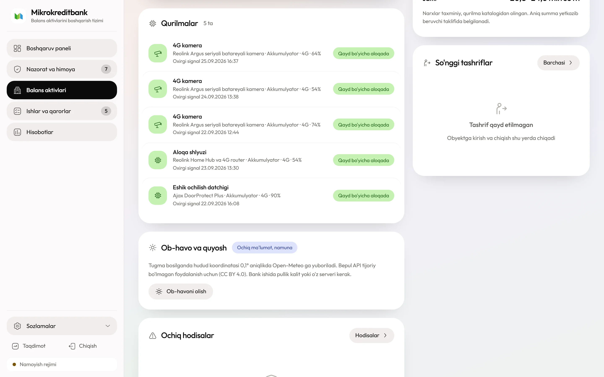

Bu yerda quyosh umuman hisobga olinmaydi. Obyektda faqat razryad bo'ladi, zaryad esa isitiladigan bazada: servis brigadasi bo'shagan blokni to'lasiga almashtiradi. Shu sabab yechim sovuqdan ta'sirlanmaydi va uzluksiz yozuvni ko'taradi.
30 Vtshkafdagi odatiy yuklama
6 kun48 V 100 A·soat blokda
40–45 kgbitta blokning og'irligi
12–20 mln so'mbir obyekt, o'rnatish bilan
Shkaf ichida: tarmoq bloki, ventilyatsiya va almashtiriladigan LiFePO4 modullari
01
Shkaf ichida nima turadi
Shkaf standart qismlardan yig'iladi va ularning hech biri bitta ishlab chiqaruvchiga bog'lanmagan. Kamera ONVIF bo'yicha, router SNMP bo'yicha, akkumulyator Modbus bo'yicha ulanadi — istalgan qismni almashtirish platformani o'zgartirmaydi.
Shkafning tartibi tasodifiy emas. Og'ir bloklar pastda — ularni almashtirishda narvon kerak bo'lmaydi va shkafning og'irlik markazi past qoladi. Avtomatlar tepada — servischi qopqoqni ochishi bilan birinchi ko'radigan narsa uzgich bo'ladi. Shlyuz bloklarga yaqin — RS-485 chizig'i qanchalik qisqa bo'lsa, quyosh kontrollerining shovqiniga shunchalik kam bog'liq bo'ladi.
Qism
Talab
Vt
Metall shkaf
IP55 yoki undan yuqori, qulf va ochilish datchigi bilan
—
48 V LiFePO4 blok
100 A·soat, tez uziladigan ulagich, Modbus'li BMS
—
2–4 ONVIF kamera
PoE, IR bilan; qo'zg'almas yoki PTZ
8–12
NVR yoki PoE kommutator
4 kanal, SSD bilan
6–10
Ikki SIM'li 4G router
12 V DC kirish, tashqi antenna, SNMP
3–6
DC taqsimlash va 48→12 V
Saqlagichlar, o'zgartirgich, ventilyatsiya
1–2
Sutkalik hisobga olinadigan yuklama
Odatiy to'plam uchun
≈30
48 V shinasidan to'g'ridan-to'g'ri PoE berish bir bosqich o'zgartirishni olib tashlaydi va yo'qotishni 4–6% ga kamaytiradi. Bu kichik ko'rinadi, lekin 30 Vt yuklamada u yiliga bir necha qo'shimcha kunlik avtonomiya beradi va yiliga bir necha tashrifni olib tashlaydi.
02
Yuklamani kamaytirish — asosiy ish
Bu yechimda quvvatni ko'paytirib bo'lmaydi: quyosh yo'q, tarmoq yo'q. Yagona tutqich — iste'molni tushirish. Har bitta olib tashlangan vatt avtonomiyani bir necha soatga uzaytiradi va yilda bir necha tashrifni yo'qotadi.
IR yoritgich
Kameraning eng och qismi
Tunda IR yoritgich kamera sarfini ikki-uch barobar oshiradi. Yechim: yoritgich doimiy emas, harakat datchigi bo'yicha yoqiladi. Yoritgichsiz kamera tunda faqat siluetni ko'radi, bu esa ko'p obyektda «kimdir keldi» savoliga javob berish uchun yetarli.
Yozuv
HDD o'rniga SSD yoki microSD
Aylanadigan disk doimiy 4–7 Vt oladi va sovuqda ishga tushmasligi mumkin. SSD bir vatt atrofida iste'mol qiladi, kameraning o'z microSD kartasi esa umuman qo'shimcha sarf qo'shmaydi. To'rt kamerali obyektda bu yolg'iz o'zi avtonomiyani bir kunga uzaytiradi.
Bitreyt
Kunduzi past, hodisada yuqori
Kamera kunduzi past bitreytda yozadi, hodisa aniqlanganda esa to'liq sifatga o'tadi. Bu yozuv hajmini ham, protsessor va tarmoq sarfini ham tushiradi. Sozlama kamerada bir marta qilinadi va montaj shablonida saqlanadi.
Router
Antenna sarfni belgilaydi
Zaif signalda router uzatgichni to'liq quvvatga chiqaradi va sarfi 30–40% oshadi. Tashqi antennani signal eng kuchli nuqtaga chiqarish — bu kabel va kronshteyn narxiga qilingan eng foydali xarajat.
03
Avtonomiya hisobi
48 V 100 A·soat blokda 5,12 kVt·soat bor. BMS 90% dan chuqur razryadga yo'l qo'ymaydi va DC-DC o'zgartirish 5% ni oladi: foydali sig'im taxminan 4,4 kVt·soat.
Tashrif soni yuklamaga to'g'ridan-to'g'ri bog'langan. 30 Vt dan 15 Vt ga tushish besh yilda 130 ga yaqin tashrifni olib tashlaydi — bu SSD va jadval bo'yicha IR narxidan ancha katta summa.
Sovuq bu yechimga zarar qilmaydi. LiFePO4 razryadi −20 °C gacha ruxsat etiladi, 0 °C dan past zaryad taqiqi esa bazada hal bo'ladi: bo'shagan blok isitiladigan xonada zaryadlanadi.
04
Blok almashtirish: o'n daqiqalik amal
Butun yechim shu amalga tayanadi. Agar almashtirish o'n daqiqadan uzoq davom etsa yoki bir kishi uddasidan chiqolmasa, servis xarajati loyihani yeb qo'yadi.
1
Og'irlikni oldindan hisoblang. 48 V 100 A·soat LiFePO4 blok 40–45 kg keladi. Zinapoyali yerto'laga yoki tor koridorga uni bir kishi ko'tarib chiqa olmaydi. Shunday obyektda blok ikkita 24 V modulga bo'linadi.
2
Ulagich tez uziladigan turda bo'lsin. Vintli klemma bilan almashtirish yigirma daqiqaga cho'ziladi va har safar kontakt sifati pasayadi. Qutb xatosini istisno qiladigan ulagich olinadi.
3
Almashtirish paytida tizim o'chmasin. Shkafda kichik zaxira akkumulyator qoldiriladi: u besh-o'n daqiqa yuklamani ushlab turadi. Aks holda har almashtirish NVR va routerni qayta yuklashga aylanadi.
4
Marshrut platformadan tuziladi. Adapter har obyektning qolgan kunini hisoblaydi; uch kundan kam qolganlar bitta yo'nalishga yig'iladi. Bir chiqishda besh-sakkiz obyekt xizmat ko'rsatiladi.
5
Tashish qoidalari tekshiriladi. Litiy akkumulyator xavfli yuk sifatida tasniflanadi. Transportda mahkamlash, qutb himoyasi va hujjat talablari servis shartnomasida yoziladi.
6
Rotatsiya fondi: har 2–3 obyektga bitta zaxira blok. Fondsiz almashtirish mumkin emas — brigada bo'shagan blokni olib, o'rniga zaryadlanganini qo'yishi kerak, ikkinchi safar kelmasligi uchun.
05
Uch protokol: video, tarmoq, quvvat
Bu yechimda platformaga videodan tashqari quvvat telemetriyasi ham keladi — va aynan u servis rejasini tuzadi. Akkumulyator qancha qolganini bilmasdan rotatsiyani rejalashtirib bo'lmaydi.
Qurilma
Protokol
Adapter nimani oladi
Kamera
ONVIF Profile S/T, RTSP
Oqim, harakat hodisasi, kamera holati
NVR
ONVIF Profile G yoki vendor API
Arxivdan klip, disk holati
Router
SNMP v3, HTTP API
RSRP, SINR, faol SIM, trafik
BMS
Modbus RTU (RS-485) yoki CAN
Zaryad, kuchlanish, tok, harorat, xatolar
Quvvat telemetriyasi
BMS javobi va qolgan kun
BMS odatda RS-485 orqali Modbus RTU beradi. Shkafdagi kichik shlyuz uni Modbus TCP'ga o'giradi, adapter tunnel orqali har besh daqiqada o'qiydi. qolgan_kun maydoni qurilmadan kelmaydi — uni adapter hisoblaydi: qolgan energiya bo'linadi oxirgi 24 soatdagi o'rtacha sarfga.
Modbus registr xaritasi har ishlab chiqaruvchida boshqacha. Xarid shartiga yoziladi: sotuvchi registr xaritasini hujjat sifatida beradi. Xaritasiz BMS olinmaydi — u holda zaryadni faqat obyektga borib ko'rish mumkin va butun rotatsiya rejasi ma'nosini yo'qotadi.
06
Operator nimani ko'radi va nima qila oladi
Bu yechim boshqalaridan bitta narsa bilan farq qiladi: operator uzluksiz arxivga ega. Ko'rikda nizo chiqsa yoki xaridor da'vo qilsa, kerakli soatni topib ko'rish mumkin.

Obyekt kartochkasi, «Himoya» bo'limi. Akkumulyator zaryadi har bir qurilma uchun alohida ko'rsatiladi, yonida oxirgi signal vaqti.
Amal
Qanday bajariladi
Cheklov
Uzluksiz arxiv
NVR yoki microSD'dan, sana va soat bo'yicha
Disk hajmiga qarab 1–4 hafta
Jonli video
Istalgan vaqtda, kamera doim yoqiq
Trafik: qo'shimcha oqim ochiladi
Zaryad va qolgan kun
BMS'dan har 5 daqiqada
3 kundan kam qolsa vazifa avtomatik ochiladi
Shkaf ochilishi
Ochilish datchigi alohida hodisa beradi
Servis tashrifi oldindan e'lon qilinadi
Eshik va domofon
Xohishga ko'ra shkafga qo'shiladi
Qo'shimcha yuklama avtonomiyani qisqartiradi
07
O'rnatish: bir-ikki kun, ikki kishi
Ish hajmi kabelga bog'liq: kameralar shkafdan uzoq bo'lsa, vaqtning yarmi trassa yotqizishga ketadi. Shkaf joyi ham oldindan tanlanadi — uni keyin ko'chirish butun kabel tarmog'ini qayta qilish degani.
1
Shkaf ichki xonaga yoki ko'zga tashlanmaydigan joyga. Devorga ankerlanadi, ochilish datchigi qo'yiladi. Bloklarga seriya raqami va MKB belgisi tushiriladi: akkumulyator shkafi o'g'rilar uchun qimmat o'lja.
2
Kamera kabeli ichki devor bo'ylab, tashqi qismi gofra ichida. PoE uchun kamida CAT5e, 90 metrdan uzun trassa bo'lmasin: uzunroq masofada kuchlanish tushadi va kamera IR yoqilganda qayta yuklanadi.
3
Antenna signal eng kuchli nuqtaga chiqariladi va ikki operatorda o'lchanadi. O'lchov natijasi dalolatnomaga yoziladi: routerning sarfi shu raqamga bog'langan.
4
Kutish toki ampermetr bilan o'lchanadi va dalolatnomaga yoziladi. Hisobdagi 30 Vt bilan farq 15% dan oshsa, rotatsiya jadvali shu obyekt uchun qaytadan tuziladi.
5
Har qurilma platformada ro'yxatga olinadi: kamera, router, NVR va akkumulyator bloki. Blok raqami obyektga bog'lanadi, shunda rotatsiyada qaysi blok qayerda ekani har doim ma'lum bo'ladi.
08
Smeta: jihoz arzon, servis qimmat
Bu yechimda boshlang'ich smeta eng katta, lekin qaror aslida boshqa qatorda qabul qilinadi: besh yillik tashriflar jihoz narxidan oshib ketadi.
Qator
Narxni nima belgilaydi
mln so'm
48 V 100 A·soat LiFePO4, Modbus BMS bilan
Sig'im, tsikl resursi, BMS imkoniyatlari
6–9
Shkaf, DC taqsimlash, o'zgartirgich
Himoya darajasi, ventilyatsiya, qulf
1,5–2,5
2 ta ONVIF kamera va NVR
Ruxsat, IR masofasi, disk turi
2,5–4,5
Ikki SIM'li 4G router
Sanoat sinfi, antenna chiqishlari
1,0–2,0
Montaj va sozlash
Kabel trassasi uzunligi
1,0–2,0
Jami
Bir obyekt, o'rnatish bilan
12–20
Rotatsiya uchun har 2–3 obyektga bitta zaxira blok qo'shiladi: obyektga 2–4,5 mln so'm. Bu qator smetada ko'pincha unutiladi, keyin esa butun rotatsiya sxemasi ishlamay qoladi — brigada bo'sh blok bilan qaytishga majbur bo'ladi.
09
Besh yil: servis logistikasi
Jihoz besh yil ishlaydi, akkumulyator 3 000 tsikldan ortiq resursga ega. Xarajatning butun og'irligi almashtirish tashriflarida — va bu yagona qator, uni oldindan aniq hisoblash kerak.
Nima
Qachon
Besh yilda, mln so'm
Boshlang'ich smeta va zaxira blok
Bir marta
14–24
SIM va trafik
Oyiga 60–100 ming so'm
3,6–6,0
Almashtirish tashriflari
15 Vt yuklamada yiliga ≈30 marta
asosiy o'zgaruvchi
Zaryadlash bazasi
Bir marta: zaryadlagichlar va isitiladigan xona
umumiy xarajat
Akkumulyator resursi
3 000 tsikl: haftalik almashtirishda 10 yildan ortiq
0
Bitta tashrif narxi masofa va marshrutga bog'liq. Bir marshrutda besh-sakkiz obyekt yig'ilsa, xarajat shu obyektlarga bo'linadi. Pilotda bu narx taxmin qilinmaydi, o'lchanadi.
10
Uchta buzilish yo'li
Bu yechimda texnika kamdan-kam buziladi — buziladigan narsa jarayon. Uchala nosozlik ham logistika va ma'lumot bilan bog'liq.
Nosozlik 1
Marshrut kechikadi va obyekt o'chadi
Yo'l yopiq, brigada band, zaxira blok bo'shatilmagan — sabab har xil, natija bitta: akkumulyator tugaydi va obyekt bir necha kun nazoratsiz qoladi. Eng yomoni, bu ko'pincha dam olish kunlariga to'g'ri keladi.
Nima qiladiVazifa zaryad 25% ga tushganda emas, qolgan kun 3 dan kam bo'lganda ochiladi: bu uch kunlik zaxira beradi. Marshrut haftaning boshida tuziladi, zaxira fondi esa har 2–3 obyektga bitta blok darajasida ushlab turiladi.
Nosozlik 2
BMS ma'lumot bermaydi
Registr xaritasi berilmagan, RS-485 shlyuzi ishlamaydi yoki BMS umuman aloqa portiga ega emas. Natijada qolgan kun hisoblanmaydi va rotatsiya taqvim bo'yicha, ya'ni ko'r-ko'rona olib boriladi.
Nima qiladiRegistr xaritasi xarid shartining majburiy bandi. Qabul qilishda adapter BMS'dan haqiqiy qiymat o'qiyotgani tekshiriladi va dalolatnomaga yoziladi. Zaxira sifatida shkafga alohida kuchlanish o'lchagich qo'yiladi.
Nosozlik 3
Blokni ko'tarib bo'lmaydi
Loyihada hisobga olinmagan zinapoya, tor eshik yoki yerto'la. 45 kg blokni bir kishi ko'tarib chiqa olmaydi, ikki kishi esa tor joyda buraolmaydi. Amalda bu montajdan keyin, birinchi almashtirish kunida ma'lum bo'ladi.
Nima qiladiKo'rik bosqichida shkafgacha bo'lgan yo'l o'lchanadi va dalolatnomaga yoziladi. Murakkab joyda blok ikkita 24 V modulga bo'linadi yoki shkaf kirishga yaqinroq joyga ko'chiriladi.
11
Balansdagi qaysi obyektga mos
Bu eng qimmat va eng imkoniyatli yechim. U faqat ikki holatda tanlanadi: quyosh panelini qo'yib bo'lmaydi yoki uzluksiz yozuv haqiqatan kerak.
Mos keladi
Isitilmaydigan ombor va sovutkichli ombor: sovuq bu yechimga ta'sir qilmaydi.
Panel qo'yib bo'lmaydigan joy: shimoliy tomon, ijaradagi tom, ruxsat berilmagan fasad.
Uzluksiz yozuv kerak bo'lgan qimmat obyekt: sex, ishlab chiqarish liniyasi, texnika ombori.
Bir necha kamera talab qilinadigan ichki maydon: shkaf ularning hammasini bitta manbadan boqadi.
Mos kelmaydi
Servis marshrutidan uzoqda turgan yolg'iz obyekt: haftalik tashrif imkonsiz.
Kichik qiymatli obyekt: 12–20 mln so'm nazorat xarajati aktiv qiymatiga mutanosib bo'lmaydi.
Quyoshga ochiq joy bor obyekt: bu yerda Yechim 02 yoki 03 bir necha barobar arzon.
Shkafgacha yo'l tor yoki zinapoyali obyekt — blok almashtirish amalda bajarilmaydi.
Bir necha oyga sotilishi kutilayotgan obyekt: shkaf montaji va demontaji o'zini oqlamaydi.
12
Sotuvchiga xarid oldidan beriladigan savollar
Birinchi ikkitasi hal qiluvchi: registr xaritasi va blok og'irligi bo'lmasa, shkaf platformaga zaryadni ham, qolgan kunni ham ayta olmaydi va rotatsiya rejasi tuzilmaydi.
BMS registr xaritasi hujjat sifatida beriladimi?Xaritasiz zaryad ma'lumoti platformaga chiqmaydi va rotatsiya rejasi tuzilmaydi.
Blokning og'irligi va o'lchami qancha, uni bo'lish mumkinmi?24 V modullarga bo'linish imkoni tor joylardagi obyektlar uchun hal qiluvchi.
Tsikl resursi qancha va u qanday sharoitda o'lchangan?3 000 tsikl talabi shartnomaga yoziladi, o'lchov sharoiti datasheet'da bo'lsin.
Tez uziladigan ulagich qaysi turda va uning toki yetadimi?Almashtirish o'n daqiqadan oshmasligi kerak.
Shkaf qanday himoya darajasiga ega va ventilyatsiyasi qanday?IP55 dan past shkaf changli omborda bir yilda ifloslanadi.
Zaryadlagich bir vaqtda nechta blokni oladi?Bazaning quvvati rotatsiya tezligini belgilaydi.
Kafolat necha yil va u tsikl soniga bog'liqmi?Uch yillik kafolat va 3 000 tsikl — minimal talab.
Litiy blokni tashish uchun qanday hujjat kerak?Xavfli yuk talablari servis shartnomasida aniq yozilsin.
13
Boshqa yechimlar bilan yonma-yon
Bir obyektga bitta yechim tanlanadi va tanlovni obyektning issiqligi, perimetri va yozuv talabi belgilaydi.